Blog · 31 posts件の記事개의 글artikelbài viếtarticlesartículosBeiträge
AI Design Techniques BlogAIデザインテクニック ブログAI 디자인 기법 블로그Blog Teknik Reka Bentuk AIBlog kỹ thuật thiết kế AIBlog des techniques de design IABlog de técnicas de diseño con IABlog: KI-Designtechniken
Original analysis: we synthesise multiple public sources in our own words and add our take and checklists. Every post ends with full references.オリジナル分析：複数の公開資料を独自の言葉でまとめ、見解とチェックリストを加えています。各記事末尾に出典を掲載。독자적 분석: 여러 공개 자료를 우리 말로 종합하고 견해와 체크리스트를 더했습니다. 모든 글 끝에 출처를 밝힙니다.Analisis asli: kami sintesis pelbagai sumber awam dengan kata-kata sendiri. Setiap artikel disertakan rujukan penuh.Phân tích gốc: tổng hợp nhiều nguồn công khai bằng lời của chúng tôi, kèm quan điểm và checklist. Mỗi bài đều ghi nguồn đầy đủ.Analyses originales : nous synthétisons plusieurs sources publiques avec nos mots. Chaque article cite toutes ses références.Análisis original: sintetizamos varias fuentes públicas con nuestras palabras. Cada artículo cita todas sus referencias.Eigene Analysen: Wir fassen mehrere öffentliche Quellen in eigenen Worten zusammen. Jeder Beitrag nennt alle Quellen.
Featured注目추천PilihanNổi bậtÀ la uneDestacadosEmpfohlen
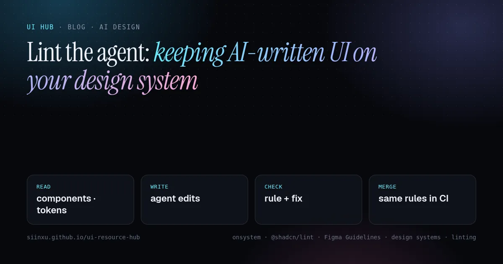
Lint the agent: keeping AI-written UI on your design systemエージェントにLintを：AIが書くUIをデザインシステムに留める에이전트에 린트를: AI가 쓴 UI를 디자인 시스템 안에 묶어 두기Lint untuk ejen: memastikan UI tulisan AI kekal dalam sistem reka bentuk andaLint cho agent: giữ UI do AI viết bám đúng design systemLinter l’agent : garder l’UI écrite par l’IA dans votre design systemLintear al agente: mantener la UI escrita por IA dentro de tu design systemDen Agenten linten: KI-geschriebene UI im eigenen Design-System halten
On 22 October the open-source onsystem went public, joining shadcn’s agent-first linter and Figma’s new Guidelines and system check. The shared idea: stop asking agents to follow your design system and start checking every edit. What the benchmark shows, and a setup checklist.10月22日、オープンソースのonsystemが公開され、shadcnのエージェント向けリンターやFigmaの新しいGuidelines・システムチェックに加わった。共通の考え方は、デザインシステムを守るよう頼むのではなく、すべての編集を検査すること。ベンチマークの読み方と導入チェックリスト。10월 22일 오픈소스 onsystem이 공개되며 shadcn의 에이전트용 린터, Figma의 새 Guidelines·시스템 체크와 나란히 섰다. 공통된 생각은 디자인 시스템을 지켜 달라고 부탁하지 말고 모든 편집을 검사하라는 것. 벤치마크가 말하는 것과 설정 체크리스트.Pada 22 Okt, onsystem sumber terbuka dilancarkan, menyertai linter shadcn untuk ejen serta Guidelines dan semakan sistem baharu Figma. Idea yang sama: berhenti meminta ejen mematuhi sistem reka bentuk, mula menyemak setiap suntingan. Apa kata penanda arasnya, dan senarai semak persediaan.Ngày 22/10, công cụ mã nguồn mở onsystem ra mắt, đứng cạnh linter dành cho agent của shadcn và Guidelines cùng system check mới của Figma. Ý chung: đừng chỉ nhờ agent tuân thủ design system, hãy kiểm tra từng lần sửa. Benchmark nói gì và checklist thiết lập.Le 22 octobre, l’outil open source onsystem est sorti, rejoignant le linter pour agents de shadcn et les nouvelles Guidelines et vérifications système de Figma. L’idée commune : ne plus demander à l’agent de respecter le design system, mais vérifier chaque modification. Ce que dit le benchmark, et une checklist.El 22 de octubre se publicó onsystem, de código abierto, junto al linter para agentes de shadcn y las nuevas Guidelines y comprobaciones de sistema de Figma. La idea común: dejar de pedir al agente que respete el design system y empezar a revisar cada edición. Qué dice el benchmark y una lista de configuración.Am 22. Oktober erschien das Open-Source-Tool onsystem, neben shadcns Linter für Agenten und Figmas neuen Guidelines und System-Checks. Die gemeinsame Idee: Agenten nicht mehr bitten, das Design-System einzuhalten, sondern jede Änderung prüfen. Was der Benchmark zeigt, plus Setup-Checkliste.
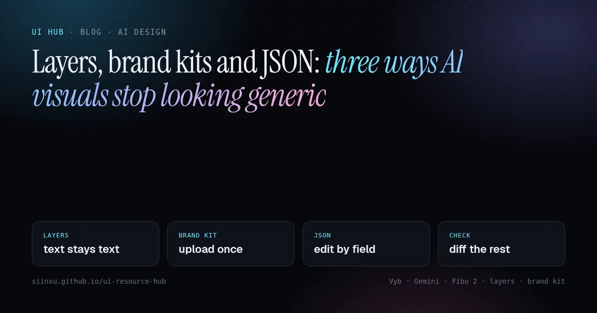
Layers, brand kits and JSON: three ways AI visuals stop looking genericレイヤー、ブランドキット、JSON：AIビジュアルが没個性から抜け出す3つの方法레이어, 브랜드 키트, JSON: AI 비주얼이 뻔해지지 않는 세 가지 방법Lapisan, kit jenama dan JSON: tiga cara visual AI berhenti kelihatan generikLayer, bộ nhận diện và JSON: ba cách để hình ảnh AI hết rập khuônCalques, kits de marque et JSON : trois façons de rendre les visuels IA moins génériquesCapas, kits de marca y JSON: tres formas de que los visuales con IA dejen de parecer genéricosEbenen, Brand-Kits und JSON: drei Wege, wie KI-Visuals nicht mehr generisch wirken
On 20 October Coco Labs launched Vyb, a design model that builds in layers; Gemini started remembering an uploaded brand style; and Bria shipped Fibo 2, which turns every edit into editable JSON. Three different answers to the same problem, and a checklist for using them.10月20日、Coco Labsはレイヤーで組み立てるデザインモデルVybを発表し、Geminiはアップロードしたブランドスタイルを記憶し始め、BriaはすべてのEditを編集可能なJSONにするFibo 2を公開。同じ課題への3つの答えと実践チェックリスト。10월 20일 Coco Labs는 레이어로 디자인을 만드는 모델 Vyb를, Gemini는 업로드한 브랜드 스타일 기억 기능을, Bria는 모든 편집을 수정 가능한 JSON으로 바꾸는 Fibo 2를 내놓았다. 같은 문제에 대한 세 가지 답과 체크리스트.Pada 20 Okt, Coco Labs melancarkan Vyb yang membina reka bentuk secara berlapis, Gemini mula mengingati gaya jenama yang dimuat naik, dan Bria melancarkan Fibo 2 yang menjadikan setiap suntingan JSON boleh diubah. Tiga jawapan dan satu senarai semak.Ngày 20/10, Coco Labs ra mắt Vyb, mô hình thiết kế dựng theo layer; Gemini bắt đầu ghi nhớ phong cách thương hiệu bạn tải lên; Bria phát hành Fibo 2, biến mỗi lần chỉnh sửa thành JSON sửa được. Ba lời giải và một checklist.Le 20 octobre, Coco Labs a lancé Vyb, un modèle qui construit en calques ; Gemini mémorise désormais un style de marque importé ; Bria a publié Fibo 2, qui transforme chaque retouche en JSON modifiable. Trois réponses et une checklist.El 20 de octubre Coco Labs lanzó Vyb, un modelo que diseña por capas; Gemini empezó a recordar un estilo de marca subido; y Bria publicó Fibo 2, que convierte cada edición en JSON editable. Tres respuestas y una lista de control.Am 20. Oktober brachte Coco Labs Vyb, ein Modell, das in Ebenen gestaltet; Gemini merkt sich jetzt einen hochgeladenen Markenstil; Bria veröffentlichte Fibo 2, das jede Bearbeitung in editierbares JSON verwandelt. Drei Antworten und eine Checkliste.
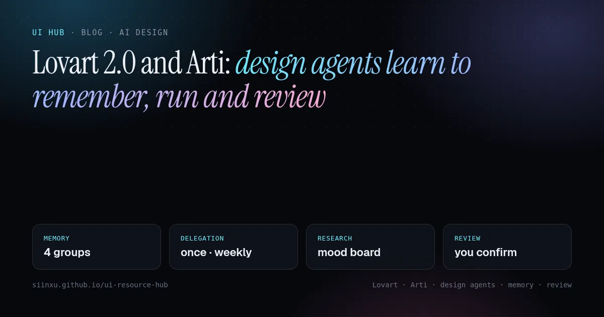
Lovart 2.0 and Arti: design agents learn to remember, run and reviewLovart 2.0 と Arti：デザインエージェントが記憶し、任され、自ら見直すLovart 2.0과 Arti: 디자인 에이전트가 기억하고, 맡아서 하고, 스스로 검토한다Lovart 2.0 dan Arti: ejen reka bentuk belajar mengingat, menjalankan dan menyemakLovart 2.0 và Arti: agent thiết kế biết ghi nhớ, tự chạy và tự rà soátLovart 2.0 et Arti : les agents de design apprennent à se souvenir, à travailler seuls et à se relireLovart 2.0 y Arti: los agentes de diseño aprenden a recordar, ejecutar y revisarLovart 2.0 und Arti: Design-Agenten lernen erinnern, selbst arbeiten und prüfen
Lovart 2.0 adds an editable taste memory, scheduled design delegation and a background consistency check. Read alongside two other launches from 19 Oct, it shows where design agents are heading, and what you should write down before you hand one the work.Lovart 2.0は編集可能な好みの記憶、定期実行できるデザイン委任、バックグラウンドの一貫性チェックを追加。10月19日の他の2つの発表と並べると、デザインエージェントの方向性と、任せる前に書き出すべきことが見えてくる。Lovart 2.0은 편집 가능한 취향 메모리, 예약 가능한 디자인 위임, 백그라운드 일관성 검사를 추가했다. 10월 19일의 다른 두 발표와 함께 보면 디자인 에이전트의 방향과, 일을 맡기기 전에 적어 둘 것이 보인다.Lovart 2.0 menambah memori citarasa yang boleh disunting, delegasi reka bentuk berjadual dan semakan konsistensi di latar. Dibaca bersama dua pelancaran lain pada 19 Okt, ia menunjukkan hala tuju ejen reka bentuk.Lovart 2.0 thêm bộ nhớ gu thẩm mỹ chỉnh sửa được, giao việc thiết kế theo lịch và kiểm tra nhất quán chạy nền. Đặt cạnh hai bản phát hành khác ngày 19/10, ta thấy hướng đi của agent thiết kế.Lovart 2.0 ajoute une mémoire de goût modifiable, une délégation planifiée et une vérification de cohérence en arrière-plan. Lu avec deux autres lancements du 19 octobre, il montre où vont les agents de design.Lovart 2.0 añade una memoria de gusto editable, delegación programada y una revisión de coherencia en segundo plano. Junto a otros dos lanzamientos del 19 de octubre, muestra hacia dónde van los agentes de diseño.Lovart 2.0 bringt ein editierbares Geschmacksgedächtnis, geplante Design-Delegation und eine Konsistenzprüfung im Hintergrund. Zusammen mit zwei weiteren Launches vom 19. Oktober zeigt es, wohin Design-Agenten gehen.
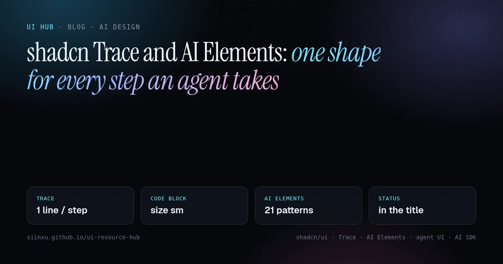
shadcn Trace and AI Elements: one shape for every step an agent takesshadcn の Trace と AI Elements：エージェントのすべてのステップを同じ形にshadcn Trace와 AI Elements: 에이전트의 모든 단계를 같은 모양으로Trace dan AI Elements shadcn: satu bentuk untuk setiap langkah ejenTrace và AI Elements của shadcn: một hình dạng cho mọi bước của agentTrace et AI Elements de shadcn : une seule forme pour chaque étape d’un agentTrace y AI Elements de shadcn: una sola forma para cada paso de un agenteshadcn Trace und AI Elements: eine Form für jeden Schritt eines Agenten
On 14 Oct 2026 shadcn/ui shipped Trace, Code Block and 21 copy-in AI Elements patterns that replace AI SDK Elements. The design lesson: reasoning, tool calls, sources and subagents are all one line with an icon, a title and a status, so agent UIs stop looking like debug logs.2026年10月14日、shadcn/ui は Trace、Code Block、そしてコピーして使う21の AI Elements パターンを公開し、AI SDK Elements を置き換えた。デザイン上の教訓：推論、ツール呼び出し、ソース、サブエージェントはすべて「アイコン・タイトル・状態」を持つ1行であり、エージェントUIはもうデバッグログのように見える必要はない。2026년 10월 14일 shadcn/ui는 Trace, Code Block, 그리고 복사해서 쓰는 21개의 AI Elements 패턴을 공개해 AI SDK Elements를 대체했다. 디자인 교훈: 추론, 도구 호출, 출처, 서브에이전트는 모두 아이콘·제목·상태를 가진 한 줄이며, 에이전트 UI가 더 이상 디버그 로그처럼 보일 필요가 없다.Pada 14 Okt 2026 shadcn/ui melancarkan Trace, Code Block dan 21 corak AI Elements yang disalin terus ke projek, menggantikan AI SDK Elements. Pengajaran reka bentuk: penaakulan, panggilan alat, sumber dan subejen semuanya satu baris dengan ikon, tajuk dan status, jadi UI ejen tidak lagi kelihatan seperti log nyahpepijat.Ngày 14/10/2026, shadcn/ui ra mắt Trace, Code Block và 21 mẫu AI Elements sao chép thẳng vào dự án, thay thế AI SDK Elements. Bài học thiết kế: suy luận, gọi công cụ, nguồn và subagent đều là một dòng có biểu tượng, tiêu đề và trạng thái, nên giao diện agent không còn trông như log gỡ lỗi.Le 14 oct. 2026, shadcn/ui a publié Trace, Code Block et 21 patterns AI Elements à copier dans le projet, qui remplacent AI SDK Elements. Leçon de design : raisonnement, appels d’outils, sources et sous-agents sont tous une ligne avec icône, titre et statut, et les interfaces d’agents cessent de ressembler à des logs de débogage.El 14 oct 2026 shadcn/ui lanzó Trace, Code Block y 21 patrones de AI Elements que se copian al proyecto y sustituyen a AI SDK Elements. La lección de diseño: razonamiento, llamadas a herramientas, fuentes y subagentes son todos una línea con icono, título y estado, y las interfaces de agentes dejan de parecer logs de depuración.Am 14. Okt. 2026 veröffentlichte shadcn/ui Trace, Code Block und 21 kopierbare AI-Elements-Patterns, die AI SDK Elements ablösen. Die Designlehre: Reasoning, Tool-Calls, Quellen und Subagenten sind alle eine Zeile mit Icon, Titel und Status, und Agenten-UIs sehen nicht mehr wie Debug-Logs aus.
Series: Prompt-to-UI toolsシリーズ：プロンプトUIツール시리즈: 프롬프트-UI 도구Siri: Alat prompt-ke-UILoạt bài: Công cụ prompt-to-UISérie : outils prompt-to-UISerie: herramientas prompt-to-UISerie: Prompt-to-UI-Tools
- v0 in practice: from a prompt to shadcn code you can keepv0実践：プロンプトから残せるshadcnコードへv0 실전: 프롬프트에서 남길 수 있는 shadcn 코드까지v0 secara praktikal: dari prompt ke kod shadcn yang boleh disimpanv0 thực chiến: từ một prompt đến mã shadcn giữ lại đượcv0 en pratique : d'un prompt à du code shadcn qu'on gardev0 en la práctica: de un prompt a código shadcn que puedes conservarv0 in der Praxis: vom Prompt zu shadcn-Code, den man behält
- Lovable and Bolt: when prompt-to-UI becomes prompt-to-appLovableとBolt：プロンプトからUIがアプリになるときLovable과 Bolt: 프롬프트-UI가 프롬프트-앱이 될 때Lovable dan Bolt: apabila prompt-ke-UI menjadi prompt-ke-aplLovable và Bolt: khi prompt-to-UI thành prompt-to-appLovable et Bolt : quand le prompt-to-UI devient prompt-to-appLovable y Bolt: cuando prompt-to-UI se vuelve prompt-to-appLovable und Bolt: wenn Prompt-to-UI zu Prompt-to-App wird
- Figma Make and the Figma agent: AI moves onto the canvasFigma MakeとFigmaエージェント：AIがキャンバスへFigma Make와 Figma 에이전트: AI가 캔버스로Figma Make dan ejen Figma: AI pindah ke kanvasFigma Make và agent của Figma: AI lên canvasFigma Make et l'agent Figma : l'IA arrive sur le canevasFigma Make y el agente de Figma: la IA llega al lienzoFigma Make und der Figma-Agent: KI zieht auf die Canvas
- MagicOS: Magic Patterns bets on an infinite canvas of AI threadsMagicOS：Magic Patternsは無限キャンバス＋並列AIスレッドに賭けるMagicOS: Magic Patterns, 무한 캔버스와 병렬 AI 스레드에 베팅MagicOS: Magic Patterns bertaruh pada kanvas tanpa hadMagicOS: Magic Patterns đặt cược vào canvas vô hạn và luồng AI song songMagicOS : Magic Patterns parie sur un canevas infini de fils IAMagicOS: Magic Patterns apuesta por un lienzo infinito de hilos de IAMagicOS: Magic Patterns setzt auf eine unendliche Canvas mit KI-Threads
- Prompt-to-UI tools compared: v0, Lovable, Bolt, Figma Make, Magic PatternsプロンプトUIツール比較：v0・Lovable・Bolt・Figma Make・Magic Patterns프롬프트-UI 도구 비교: v0, Lovable, Bolt, Figma Make, Magic PatternsPerbandingan alat prompt-ke-UISo sánh công cụ prompt-to-UI: v0, Lovable, Bolt, Figma Make, Magic PatternsComparatif des outils prompt-to-UIComparativa de herramientas prompt-to-UIPrompt-to-UI-Tools im Vergleich
Series: Library deep divesシリーズ：ライブラリ徹底解説시리즈: 라이브러리 심층 분석Siri: Pustaka mendalamLoạt bài: Thư viện chuyên sâuSérie : bibliothèques en profondeurSerie: bibliotecas a fondoSerie: Bibliotheken im Detail
- Aceternity UI deep dive: spectacle, used sparinglyAceternity UI徹底解説：派手さは控えめにAceternity UI 심층 분석: 화려함은 아껴서Aceternity UI mendalam: kemewahan, guna dengan jimatAceternity UI chuyên sâu: hiệu ứng ấn tượng, dùng tiết kiệmAceternity UI en profondeur : du spectacle, avec parcimonieAceternity UI a fondo: espectáculo, con moderaciónAceternity UI im Detail: Spektakel, sparsam eingesetzt
- Magic UI deep dive: animated components that install like shadcnMagic UI徹底解説：shadcnのように入るアニメ部品Magic UI 심층 분석: shadcn처럼 설치되는 애니메이션 컴포넌트Magic UI mendalam: komponen animasi dipasang seperti shadcnMagic UI chuyên sâu: component động cài như shadcnMagic UI en profondeur : des composants animés qui s'installent comme shadcnMagic UI a fondo: componentes animados que se instalan como shadcnMagic UI im Detail: animierte Komponenten, installiert wie shadcn
- Cult UI deep dive: tactile components with personalityCult UI徹底解説：触感と個性のある部品Cult UI 심층 분석: 촉감과 개성이 있는 컴포넌트Cult UI mendalam: komponen taktil berperibadiCult UI chuyên sâu: component có cảm giác và cá tínhCult UI en profondeur : des composants tactiles avec du caractèreCult UI a fondo: componentes táctiles con personalidadCult UI im Detail: taktile Komponenten mit Charakter
- shadcn blocks and registries: page sections as source codeshadcnブロックとレジストリ：ページ部品をソースとしてshadcn 블록과 레지스트리: 페이지 섹션을 소스 코드로Blok dan registry shadcn: bahagian halaman sebagai kod sumbershadcn blocks và registry: khối trang dưới dạng mã nguồnBlocs et registres shadcn : des sections de page en code sourceBloques y registros de shadcn: secciones como código fuenteshadcn-Blocks und Registries: Seitenabschnitte als Quellcode
- shadcn Trace and AI Elements: one shape for every step an agent takesshadcn の Trace と AI Elements：エージェントのすべてのステップを同じ形にshadcn Trace와 AI Elements: 에이전트의 모든 단계를 같은 모양으로Trace dan AI Elements shadcn: satu bentuk untuk setiap langkah ejenTrace và AI Elements của shadcn: một hình dạng cho mọi bước của agentTrace et AI Elements de shadcn : une seule forme pour chaque étape d’un agentTrace y AI Elements de shadcn: una sola forma para cada paso de un agenteshadcn Trace und AI Elements: eine Form für jeden Schritt eines Agenten
Series: Design context for agentsシリーズ：エージェントのデザイン文脈시리즈: 에이전트용 디자인 컨텍스트Siri: Konteks reka bentuk untuk ejenLoạt bài: Ngữ cảnh thiết kế cho agentSérie : contexte design pour agentsSerie: contexto de diseño para agentesSerie: Designkontext für Agents
- Teaching agents taste: how design skills de-slop AI interfacesエージェントにセンスを教える：デザインスキルでAIっぽさを消す에이전트에게 취향 가르치기: 디자인 스킬로 AI 티 없애기Mengajar ejen cita rasa: kemahiran reka bentuk membuang rupa "AI"Dạy agent gu thẩm mỹ: skill thiết kế xoá "mùi AI"Apprendre le goût aux agents : les skills de design contre l'UI génériqueEnseñar criterio a los agentes: skills de diseño contra la UI genéricaAgenten Geschmack beibringen: Design-Skills gegen generische KI-UIs
- Design tokens for agents: the file that makes AI output on-brandエージェントのためのデザイントークン에이전트를 위한 디자인 토큰Token reka bentuk untuk ejenDesign token cho agent: file giúp AI ra đúng thương hiệuDes design tokens pour les agentsDesign tokens para agentesDesign Tokens für Agents
- Design skills for Claude and Cursor: SKILL.md, rules and AGENTS.mdClaudeとCursorのデザインスキル：SKILL.md・rules・AGENTS.mdClaude와 Cursor의 디자인 스킬: SKILL.md, rules, AGENTS.mdKemahiran reka bentuk untuk Claude dan CursorSkill thiết kế cho Claude và Cursor: SKILL.md, rules, AGENTS.mdCompétences design pour Claude et CursorSkills de diseño para Claude y CursorDesign-Skills für Claude und Cursor
- Tutorial: have an agent build a landing page using UI Hub as contextチュートリアル：UI Hubを文脈にエージェントでLPを作る튜토리얼: UI Hub를 컨텍스트로 에이전트가 랜딩 페이지 만들기Tutorial: ejen bina halaman pendaratan dengan UI HubHướng dẫn: để agent dựng landing page với UI Hub làm ngữ cảnhTutoriel : un agent construit une landing avec UI Hub comme contexteTutorial: un agente crea una landing con UI Hub como contextoTutorial: ein Agent baut eine Landingpage mit UI Hub als Kontext
Series: Weekly roundupシリーズ：週刊まとめ시리즈: 주간 정리Siri: Ringkasan mingguanLoạt bài: Tổng hợp tuầnSérie : revue hebdoSerie: resumen semanalSerie: Wochenrückblick
All postsすべての記事모든 글Semua artikelTất cả bài viếtTous les articlesTodos los artículosAlle Beiträge31
Lint the agent: keeping AI-written UI on your design systemエージェントにLintを：AIが書くUIをデザインシステムに留める에이전트에 린트를: AI가 쓴 UI를 디자인 시스템 안에 묶어 두기Lint untuk ejen: memastikan UI tulisan AI kekal dalam sistem reka bentuk andaLint cho agent: giữ UI do AI viết bám đúng design systemLinter l’agent : garder l’UI écrite par l’IA dans votre design systemLintear al agente: mantener la UI escrita por IA dentro de tu design systemDen Agenten linten: KI-geschriebene UI im eigenen Design-System halten
On 22 October the open-source onsystem went public, joining shadcn’s agent-first linter and Figma’s new Guidelines and system check. The shared idea: stop asking agents to follow your design system and start checking every edit. What the benchmark shows, and a setup checklist.10月22日、オープンソースのonsystemが公開され、shadcnのエージェント向けリンターやFigmaの新しいGuidelines・システムチェックに加わった。共通の考え方は、デザインシステムを守るよう頼むのではなく、すべての編集を検査すること。ベンチマークの読み方と導入チェックリスト。10월 22일 오픈소스 onsystem이 공개되며 shadcn의 에이전트용 린터, Figma의 새 Guidelines·시스템 체크와 나란히 섰다. 공통된 생각은 디자인 시스템을 지켜 달라고 부탁하지 말고 모든 편집을 검사하라는 것. 벤치마크가 말하는 것과 설정 체크리스트.Pada 22 Okt, onsystem sumber terbuka dilancarkan, menyertai linter shadcn untuk ejen serta Guidelines dan semakan sistem baharu Figma. Idea yang sama: berhenti meminta ejen mematuhi sistem reka bentuk, mula menyemak setiap suntingan. Apa kata penanda arasnya, dan senarai semak persediaan.Ngày 22/10, công cụ mã nguồn mở onsystem ra mắt, đứng cạnh linter dành cho agent của shadcn và Guidelines cùng system check mới của Figma. Ý chung: đừng chỉ nhờ agent tuân thủ design system, hãy kiểm tra từng lần sửa. Benchmark nói gì và checklist thiết lập.Le 22 octobre, l’outil open source onsystem est sorti, rejoignant le linter pour agents de shadcn et les nouvelles Guidelines et vérifications système de Figma. L’idée commune : ne plus demander à l’agent de respecter le design system, mais vérifier chaque modification. Ce que dit le benchmark, et une checklist.El 22 de octubre se publicó onsystem, de código abierto, junto al linter para agentes de shadcn y las nuevas Guidelines y comprobaciones de sistema de Figma. La idea común: dejar de pedir al agente que respete el design system y empezar a revisar cada edición. Qué dice el benchmark y una lista de configuración.Am 22. Oktober erschien das Open-Source-Tool onsystem, neben shadcns Linter für Agenten und Figmas neuen Guidelines und System-Checks. Die gemeinsame Idee: Agenten nicht mehr bitten, das Design-System einzuhalten, sondern jede Änderung prüfen. Was der Benchmark zeigt, plus Setup-Checkliste.
Layers, brand kits and JSON: three ways AI visuals stop looking genericレイヤー、ブランドキット、JSON：AIビジュアルが没個性から抜け出す3つの方法레이어, 브랜드 키트, JSON: AI 비주얼이 뻔해지지 않는 세 가지 방법Lapisan, kit jenama dan JSON: tiga cara visual AI berhenti kelihatan generikLayer, bộ nhận diện và JSON: ba cách để hình ảnh AI hết rập khuônCalques, kits de marque et JSON : trois façons de rendre les visuels IA moins génériquesCapas, kits de marca y JSON: tres formas de que los visuales con IA dejen de parecer genéricosEbenen, Brand-Kits und JSON: drei Wege, wie KI-Visuals nicht mehr generisch wirken
On 20 October Coco Labs launched Vyb, a design model that builds in layers; Gemini started remembering an uploaded brand style; and Bria shipped Fibo 2, which turns every edit into editable JSON. Three different answers to the same problem, and a checklist for using them.10月20日、Coco Labsはレイヤーで組み立てるデザインモデルVybを発表し、Geminiはアップロードしたブランドスタイルを記憶し始め、BriaはすべてのEditを編集可能なJSONにするFibo 2を公開。同じ課題への3つの答えと実践チェックリスト。10월 20일 Coco Labs는 레이어로 디자인을 만드는 모델 Vyb를, Gemini는 업로드한 브랜드 스타일 기억 기능을, Bria는 모든 편집을 수정 가능한 JSON으로 바꾸는 Fibo 2를 내놓았다. 같은 문제에 대한 세 가지 답과 체크리스트.Pada 20 Okt, Coco Labs melancarkan Vyb yang membina reka bentuk secara berlapis, Gemini mula mengingati gaya jenama yang dimuat naik, dan Bria melancarkan Fibo 2 yang menjadikan setiap suntingan JSON boleh diubah. Tiga jawapan dan satu senarai semak.Ngày 20/10, Coco Labs ra mắt Vyb, mô hình thiết kế dựng theo layer; Gemini bắt đầu ghi nhớ phong cách thương hiệu bạn tải lên; Bria phát hành Fibo 2, biến mỗi lần chỉnh sửa thành JSON sửa được. Ba lời giải và một checklist.Le 20 octobre, Coco Labs a lancé Vyb, un modèle qui construit en calques ; Gemini mémorise désormais un style de marque importé ; Bria a publié Fibo 2, qui transforme chaque retouche en JSON modifiable. Trois réponses et une checklist.El 20 de octubre Coco Labs lanzó Vyb, un modelo que diseña por capas; Gemini empezó a recordar un estilo de marca subido; y Bria publicó Fibo 2, que convierte cada edición en JSON editable. Tres respuestas y una lista de control.Am 20. Oktober brachte Coco Labs Vyb, ein Modell, das in Ebenen gestaltet; Gemini merkt sich jetzt einen hochgeladenen Markenstil; Bria veröffentlichte Fibo 2, das jede Bearbeitung in editierbares JSON verwandelt. Drei Antworten und eine Checkliste.
Lovart 2.0 and Arti: design agents learn to remember, run and reviewLovart 2.0 と Arti：デザインエージェントが記憶し、任され、自ら見直すLovart 2.0과 Arti: 디자인 에이전트가 기억하고, 맡아서 하고, 스스로 검토한다Lovart 2.0 dan Arti: ejen reka bentuk belajar mengingat, menjalankan dan menyemakLovart 2.0 và Arti: agent thiết kế biết ghi nhớ, tự chạy và tự rà soátLovart 2.0 et Arti : les agents de design apprennent à se souvenir, à travailler seuls et à se relireLovart 2.0 y Arti: los agentes de diseño aprenden a recordar, ejecutar y revisarLovart 2.0 und Arti: Design-Agenten lernen erinnern, selbst arbeiten und prüfen
Lovart 2.0 adds an editable taste memory, scheduled design delegation and a background consistency check. Read alongside two other launches from 19 Oct, it shows where design agents are heading, and what you should write down before you hand one the work.Lovart 2.0は編集可能な好みの記憶、定期実行できるデザイン委任、バックグラウンドの一貫性チェックを追加。10月19日の他の2つの発表と並べると、デザインエージェントの方向性と、任せる前に書き出すべきことが見えてくる。Lovart 2.0은 편집 가능한 취향 메모리, 예약 가능한 디자인 위임, 백그라운드 일관성 검사를 추가했다. 10월 19일의 다른 두 발표와 함께 보면 디자인 에이전트의 방향과, 일을 맡기기 전에 적어 둘 것이 보인다.Lovart 2.0 menambah memori citarasa yang boleh disunting, delegasi reka bentuk berjadual dan semakan konsistensi di latar. Dibaca bersama dua pelancaran lain pada 19 Okt, ia menunjukkan hala tuju ejen reka bentuk.Lovart 2.0 thêm bộ nhớ gu thẩm mỹ chỉnh sửa được, giao việc thiết kế theo lịch và kiểm tra nhất quán chạy nền. Đặt cạnh hai bản phát hành khác ngày 19/10, ta thấy hướng đi của agent thiết kế.Lovart 2.0 ajoute une mémoire de goût modifiable, une délégation planifiée et une vérification de cohérence en arrière-plan. Lu avec deux autres lancements du 19 octobre, il montre où vont les agents de design.Lovart 2.0 añade una memoria de gusto editable, delegación programada y una revisión de coherencia en segundo plano. Junto a otros dos lanzamientos del 19 de octubre, muestra hacia dónde van los agentes de diseño.Lovart 2.0 bringt ein editierbares Geschmacksgedächtnis, geplante Design-Delegation und eine Konsistenzprüfung im Hintergrund. Zusammen mit zwei weiteren Launches vom 19. Oktober zeigt es, wohin Design-Agenten gehen.
shadcn Trace and AI Elements: one shape for every step an agent takesshadcn の Trace と AI Elements：エージェントのすべてのステップを同じ形にshadcn Trace와 AI Elements: 에이전트의 모든 단계를 같은 모양으로Trace dan AI Elements shadcn: satu bentuk untuk setiap langkah ejenTrace và AI Elements của shadcn: một hình dạng cho mọi bước của agentTrace et AI Elements de shadcn : une seule forme pour chaque étape d’un agentTrace y AI Elements de shadcn: una sola forma para cada paso de un agenteshadcn Trace und AI Elements: eine Form für jeden Schritt eines Agenten
On 14 Oct 2026 shadcn/ui shipped Trace, Code Block and 21 copy-in AI Elements patterns that replace AI SDK Elements. The design lesson: reasoning, tool calls, sources and subagents are all one line with an icon, a title and a status, so agent UIs stop looking like debug logs.2026年10月14日、shadcn/ui は Trace、Code Block、そしてコピーして使う21の AI Elements パターンを公開し、AI SDK Elements を置き換えた。デザイン上の教訓：推論、ツール呼び出し、ソース、サブエージェントはすべて「アイコン・タイトル・状態」を持つ1行であり、エージェントUIはもうデバッグログのように見える必要はない。2026년 10월 14일 shadcn/ui는 Trace, Code Block, 그리고 복사해서 쓰는 21개의 AI Elements 패턴을 공개해 AI SDK Elements를 대체했다. 디자인 교훈: 추론, 도구 호출, 출처, 서브에이전트는 모두 아이콘·제목·상태를 가진 한 줄이며, 에이전트 UI가 더 이상 디버그 로그처럼 보일 필요가 없다.Pada 14 Okt 2026 shadcn/ui melancarkan Trace, Code Block dan 21 corak AI Elements yang disalin terus ke projek, menggantikan AI SDK Elements. Pengajaran reka bentuk: penaakulan, panggilan alat, sumber dan subejen semuanya satu baris dengan ikon, tajuk dan status, jadi UI ejen tidak lagi kelihatan seperti log nyahpepijat.Ngày 14/10/2026, shadcn/ui ra mắt Trace, Code Block và 21 mẫu AI Elements sao chép thẳng vào dự án, thay thế AI SDK Elements. Bài học thiết kế: suy luận, gọi công cụ, nguồn và subagent đều là một dòng có biểu tượng, tiêu đề và trạng thái, nên giao diện agent không còn trông như log gỡ lỗi.Le 14 oct. 2026, shadcn/ui a publié Trace, Code Block et 21 patterns AI Elements à copier dans le projet, qui remplacent AI SDK Elements. Leçon de design : raisonnement, appels d’outils, sources et sous-agents sont tous une ligne avec icône, titre et statut, et les interfaces d’agents cessent de ressembler à des logs de débogage.El 14 oct 2026 shadcn/ui lanzó Trace, Code Block y 21 patrones de AI Elements que se copian al proyecto y sustituyen a AI SDK Elements. La lección de diseño: razonamiento, llamadas a herramientas, fuentes y subagentes son todos una línea con icono, título y estado, y las interfaces de agentes dejan de parecer logs de depuración.Am 14. Okt. 2026 veröffentlichte shadcn/ui Trace, Code Block und 21 kopierbare AI-Elements-Patterns, die AI SDK Elements ablösen. Die Designlehre: Reasoning, Tool-Calls, Quellen und Subagenten sind alle eine Zeile mit Icon, Titel und Status, und Agenten-UIs sehen nicht mehr wie Debug-Logs aus.
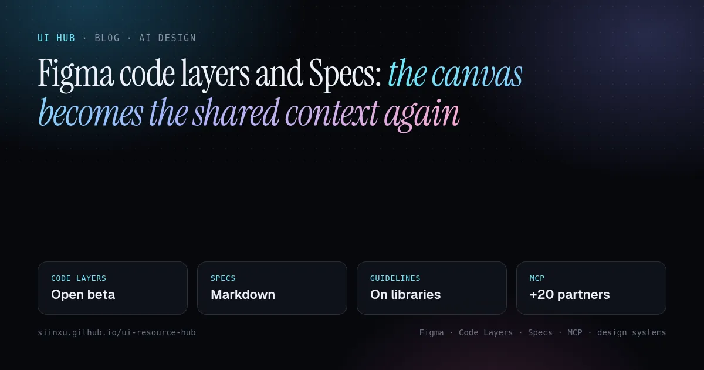
Figma code layers and Specs: the canvas becomes the shared context againFigmaのコードレイヤーと Specs：キャンバスが再び共有コンテキストにFigma 코드 레이어와 Specs: 캔버스가 다시 공유 컨텍스트가 되다Lapisan kod dan Specs Figma: kanvas kembali menjadi konteks bersamaCode layers và Specs của Figma: canvas lại là ngữ cảnh chungCode layers et Specs dans Figma : le canevas redevient le contexte partagéCode layers y Specs en Figma: el lienzo vuelve a ser el contexto compartidoFigma Code Layers und Specs: Die Canvas wird wieder zum gemeinsamen Kontext
At Config India (15 Oct 2026) Figma moved code layers into open beta, launched Specs as a Markdown home on the canvas, and let libraries carry guidelines and code sources. The lesson for UI builders: agents are short of constraint files, not generators.Config India（2026-10-15）でFigmaはコードレイヤーをオープンベータにし、Markdownをキャンバスに置くSpecsを公開、ライブラリにガイドラインとコードソースを持たせた。UI制作者への教訓：エージェントに足りないのは生成器ではなく制約ファイルだ。Config India(2026-10-15)에서 Figma는 코드 레이어를 오픈 베타로 전환하고, Markdown을 캔버스에 두는 Specs를 출시했으며, 라이브러리에 가이드라인과 코드 소스를 붙였다. UI 제작자에게 주는 교훈: 에이전트에게 부족한 것은 생성기가 아니라 제약 파일이다.Di Config India (15 Okt 2026) Figma membawa lapisan kod ke beta terbuka, melancarkan Specs sebagai rumah Markdown di kanvas, dan membenarkan pustaka membawa garis panduan serta sumber kod. Pengajaran: ejen kekurangan fail kekangan, bukan penjana.Tại Config India (15/10/2026), Figma đưa code layers vào beta mở, ra mắt Specs làm nơi đặt Markdown trên canvas, và cho thư viện mang theo guidelines cùng code sources. Bài học: agent thiếu file ràng buộc, không thiếu trình sinh.À Config India (15 oct. 2026), Figma passe les code layers en bêta ouverte, lance Specs pour le Markdown sur le canevas et laisse les bibliothèques porter guidelines et sources de code. Leçon : les agents manquent de fichiers de contraintes, pas de générateurs.En Config India (15 oct 2026) Figma llevó los code layers a beta abierta, lanzó Specs como hogar del Markdown en el lienzo y dejó que las bibliotecas lleven guidelines y fuentes de código. Lección: a los agentes les faltan archivos de restricciones, no generadores.Auf der Config India (15. Okt. 2026) brachte Figma Code Layers in die offene Beta, startete Specs als Markdown-Ort auf der Canvas und ließ Bibliotheken Guidelines und Code-Quellen tragen. Die Lehre: Agenten fehlen Constraint-Dateien, nicht Generatoren.
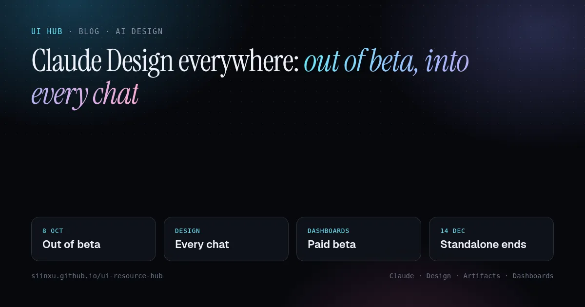
Claude Design everywhere: out of beta, into every chatClaude Designが正式版に：すべての会話で使えるClaude Design 정식 출시: 모든 대화에서 사용Claude Design di mana-mana: keluar beta, masuk setiap sembangClaude Design mọi nơi: hết beta, vào mọi cuộc trò chuyệnClaude Design partout : fin du bêta, dans chaque chatClaude Design en todas partes: fuera de beta, en cada chatClaude Design überall: aus der Beta, in jedem Chat
Anthropic took Docs, Slides and Design out of beta on every plan, launched Dashboards and Motion in beta, and will close the standalone Design site on 14 Dec 2026. For UI builders the practical move is to migrate the design system now.AnthropicはDocs/Slides/Designを全プランで正式化し、DashboardsとMotionのベータを開始。スタンドアロンDesignは2026-12-14閉鎖。UI制作者は今すぐデザインシステムを移行すべき。Anthropic이 Docs·Slides·Design을 전 요금제에서 정식 출시하고 Dashboards·Motion 베타를 열었으며, 단독 Design 사이트는 2026-12-14에 닫힌다. UI 제작자는 지금 디자인 시스템을 옮겨야 한다.Anthropic keluarkan Docs, Slides dan Design dari beta pada semua pelan, lancar Dashboards dan Motion beta, dan tutup tapak Design berasingan pada 14 Dis 2026. Pembina UI patut pindahkan sistem reka bentuk sekarang.Anthropic đưa Docs, Slides và Design ra khỏi beta trên mọi gói, mở beta Dashboards và Motion, và đóng site Design độc lập vào 14/12/2026. Người dựng UI nên migrate design system ngay.Anthropic sort Docs, Slides et Design du bêta sur tous les forfaits, lance Dashboards et Motion en bêta, et fermera le site Design autonome le 14 déc. 2026. Les builders UI doivent migrer le design system maintenant.Anthropic saca Docs, Slides y Design de beta en todos los planes, lanza Dashboards y Motion en beta, y cerrará el sitio Design independiente el 14 dic 2026. Quien construye UI debe migrar el design system ya.Anthropic nimmt Docs, Slides und Design auf allen Plänen aus der Beta, startet Dashboards und Motion in Beta und schließt die eigenständige Design-Site am 14. Dez. 2026. UI-Builder sollten das Design System jetzt migrieren.
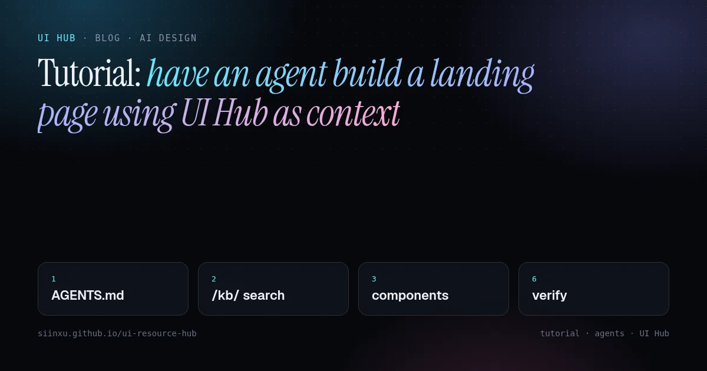
Tutorial: have an agent build a landing page using UI Hub as contextチュートリアル：UI Hubを文脈にエージェントでLPを作る튜토리얼: UI Hub를 컨텍스트로 에이전트가 랜딩 페이지 만들기Tutorial: ejen bina halaman pendaratan dengan UI HubHướng dẫn: để agent dựng landing page với UI Hub làm ngữ cảnhTutoriel : un agent construit une landing avec UI Hub comme contexteTutorial: un agente crea una landing con UI Hub como contextoTutorial: ein Agent baut eine Landingpage mit UI Hub als Kontext
Six steps from an empty folder to a verified page: load AGENTS.md, search the encyclopedia, pick components, load skills, build, verify in a browser.空フォルダから検証済みページまで6ステップ。빈 폴더에서 검증된 페이지까지 6단계.Enam langkah dari folder kosong ke halaman disahkan.Sáu bước từ thư mục trống đến trang đã kiểm chứng.Six étapes du dossier vide à la page vérifiée.Seis pasos de una carpeta vacía a una página verificada.Sechs Schritte vom leeren Ordner zur geprüften Seite.
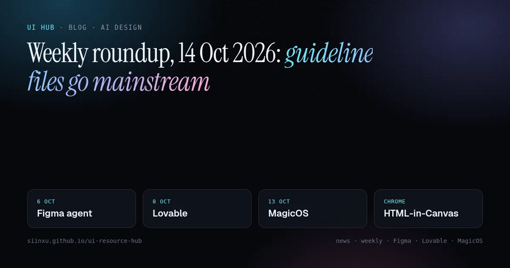
Weekly roundup, 14 Oct 2026: guideline files go mainstream週刊まとめ 2026/10/14：ガイドラインファイルが主流に주간 정리 2026-10-14: 가이드라인 파일이 대세로Ringkasan mingguan 14 Okt 2026Tổng hợp tuần 14/10/2026: file hướng dẫn thành xu hướngRevue hebdo du 14/10/2026 : les fichiers de guidelines s'imposentResumen semanal 14/10/2026: los archivos de guías se imponenWochenrückblick 14.10.2026: Guideline-Dateien setzen sich durch
Figma agent GA with team guidelines, Lovable drops its pick-a-look step, Magic Patterns launches MagicOS, Chrome iterates on HTML-in-Canvas. What it means for your workflow.Figmaエージェント正式版、Lovableのルック選択廃止、MagicOS登場、ChromeのHTML-in-Canvas。Figma 에이전트 정식, Lovable 룩 선택 제거, MagicOS 출시, Chrome HTML-in-Canvas.Ejen Figma GA, Lovable buang langkah pilih rupa, MagicOS dilancar, HTML-in-Canvas Chrome.Agent Figma GA, Lovable bỏ bước chọn phong cách, MagicOS ra mắt, Chrome HTML-in-Canvas.Agent Figma en GA, Lovable supprime le choix de style, MagicOS, HTML-in-Canvas dans Chrome.Agente de Figma GA, Lovable quita el paso de estilo, MagicOS, HTML-in-Canvas en Chrome.Figma-Agent GA, Lovable streicht Stilwahl, MagicOS, HTML-in-Canvas in Chrome.
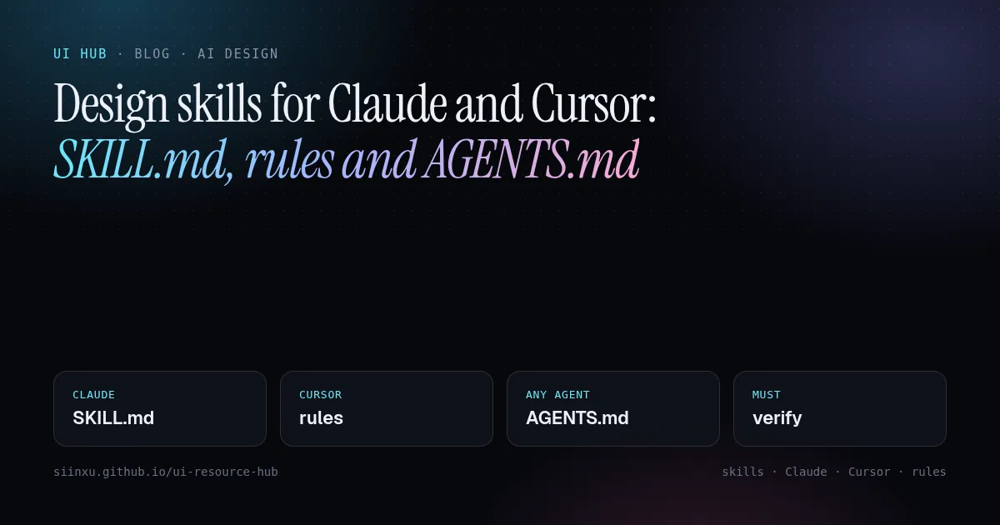
Design skills for Claude and Cursor: SKILL.md, rules and AGENTS.mdClaudeとCursorのデザインスキル：SKILL.md・rules・AGENTS.mdClaude와 Cursor의 디자인 스킬: SKILL.md, rules, AGENTS.mdKemahiran reka bentuk untuk Claude dan CursorSkill thiết kế cho Claude và Cursor: SKILL.md, rules, AGENTS.mdCompétences design pour Claude et CursorSkills de diseño para Claude y CursorDesign-Skills für Claude und Cursor
Three file formats, one idea: durable instructions an agent loads when relevant. How to write a design skill that changes output, with a template.3つの形式、1つの考え方。出力を変えるデザインスキルの書き方とテンプレート。세 가지 형식, 하나의 아이디어. 출력을 바꾸는 디자인 스킬 작성법과 템플릿.Tiga format fail, satu idea. Cara menulis kemahiran reka bentuk, dengan templat.Ba định dạng, một ý tưởng. Cách viết skill thiết kế thật sự thay đổi kết quả, kèm mẫu.Trois formats, une idée. Comment écrire une compétence design efficace, avec modèle.Tres formatos, una idea. Cómo escribir un skill de diseño eficaz, con plantilla.Drei Formate, eine Idee. So schreibt man einen wirksamen Design-Skill, mit Vorlage.
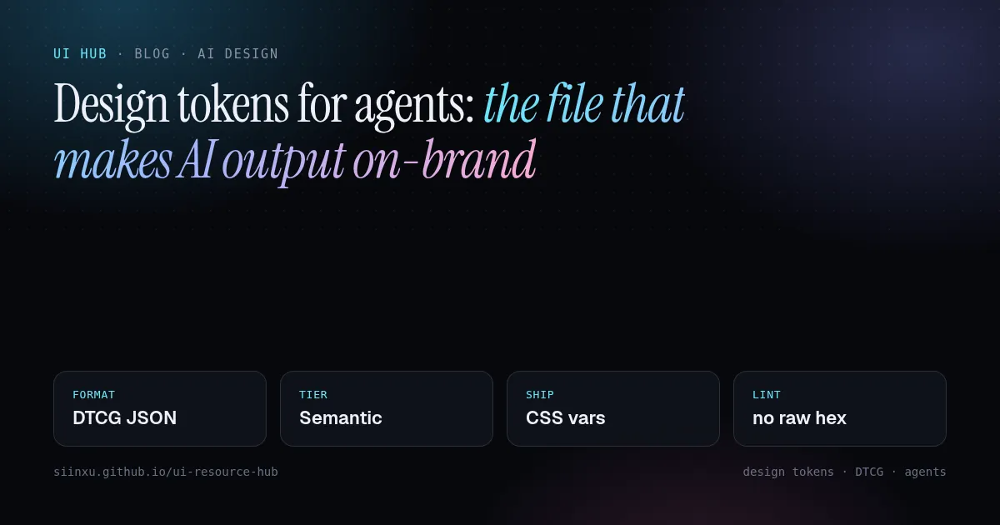
Design tokens for agents: the file that makes AI output on-brandエージェントのためのデザイントークン에이전트를 위한 디자인 토큰Token reka bentuk untuk ejenDesign token cho agent: file giúp AI ra đúng thương hiệuDes design tokens pour les agentsDesign tokens para agentesDesign Tokens für Agents
A machine-readable token file (the W3C DTCG format) plus a short usage note beats any adjective in a prompt. Structure, naming, and how to hand it to an agent.機械可読なトークン(W3C DTCG)と短い使い方メモはどんな形容詞にも勝る。기계가 읽는 토큰 파일(W3C DTCG)과 짧은 사용법이 어떤 형용사보다 낫다.Fail token boleh dibaca mesin (DTCG) mengatasi kata sifat dalam prompt.File token máy đọc được (DTCG) cùng ghi chú ngắn hơn mọi tính từ trong prompt.Un fichier de tokens lisible par machine (DTCG) vaut mieux que tout adjectif.Un archivo de tokens legible por máquina (DTCG) supera a cualquier adjetivo.Eine maschinenlesbare Token-Datei (DTCG) schlägt jedes Adjektiv.
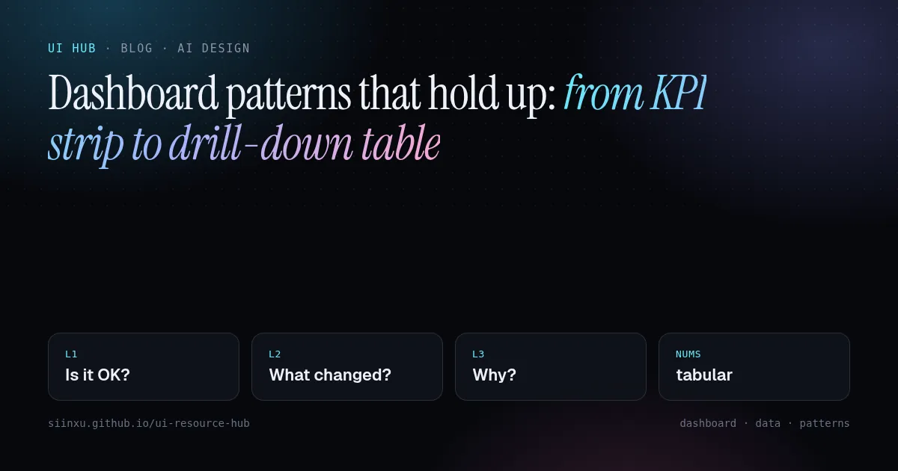
Dashboard patterns that hold up: from KPI strip to drill-down table使えるダッシュボードの型：KPIからドリルダウン表まで버티는 대시보드 패턴: KPI 띠부터 드릴다운 표까지Corak papan pemuka yang tahanMẫu dashboard bền vững: từ dải KPI đến bảng drill-downDes patterns de dashboard qui tiennentPatrones de dashboard que funcionanDashboard-Muster, die halten
AI tools love to generate twelve charts. Good dashboards answer three questions in order: is it OK, what changed, why. A layout and a component list for each.良いダッシュボードは「大丈夫か・何が変わったか・なぜか」の順に答える。좋은 대시보드는 괜찮은가, 무엇이 바뀌었나, 왜인가 순으로 답한다.Papan pemuka yang baik menjawab tiga soalan mengikut urutan.Dashboard tốt trả lời ba câu theo thứ tự: ổn không, đổi gì, tại sao.Un bon dashboard répond dans l'ordre : ça va ? qu'est-ce qui change ? pourquoi ?Un buen dashboard responde: ¿va bien?, ¿qué cambió?, ¿por qué?Gute Dashboards beantworten: Läuft es? Was hat sich geändert? Warum?
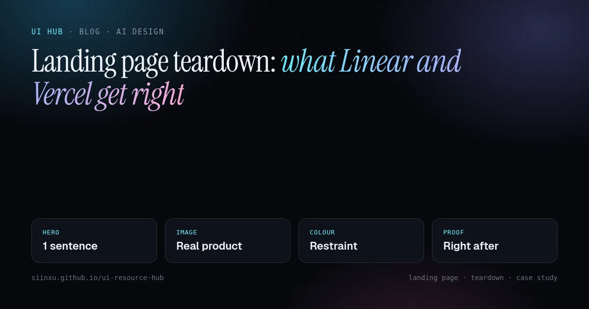
Landing page teardown: what Linear and Vercel get rightLP分解：LinearとVercelが正しくやっていること랜딩 페이지 해부: Linear와 Vercel이 잘하는 것Bedah halaman pendaratan: Linear dan VercelMổ xẻ landing page: Linear và Vercel làm đúng gìDécorticage de landing pages : ce que Linear et Vercel réussissentDesmontando landings: lo que Linear y Vercel hacen bienLandingpage-Analyse: was Linear und Vercel richtig machen
Two widely copied developer-tool homepages, read as a list of decisions: one message, product as hero image, dark restraint, and proof placed right after the promise.模倣される2つのトップページを決定の連続として読む。많이 모방되는 두 홈페이지를 결정 목록으로 읽는다.Dua laman utama yang banyak ditiru, dibaca sebagai senarai keputusan.Hai trang chủ bị bắt chước nhiều, đọc như chuỗi quyết định.Deux pages d'accueil très copiées, lues comme une liste de décisions.Dos homes muy copiadas, leídas como una lista de decisiones.Zwei oft kopierte Startseiten als Liste von Entscheidungen gelesen.
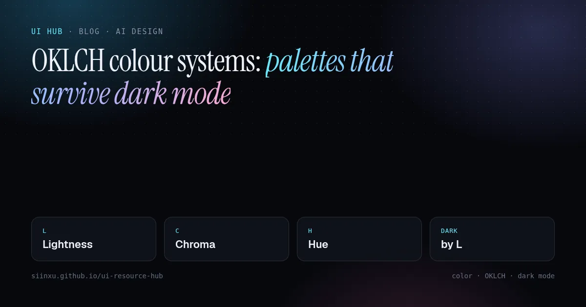
OKLCH colour systems: palettes that survive dark modeOKLCHカラー：ダークモードに耐えるパレットOKLCH 색 체계: 다크 모드에서도 버티는 팔레트Sistem warna OKLCH: palet yang tahan mod gelapHệ màu OKLCH: bảng màu sống sót trong dark modeCouleurs OKLCH : des palettes qui tiennent en mode sombreColor OKLCH: paletas que sobreviven al modo oscuroOKLCH-Farben: Paletten, die den Dark Mode überstehen
OKLCH keeps perceived lightness consistent across hues, so you can generate scales and dark themes by math instead of eyeballing. Tailwind v4 uses it by default.OKLCHは色相間で知覚明度を揃え、計算でスケールとダークテーマを作れる。Tailwind v4の既定。OKLCH는 색상 간 지각 명도를 맞춰 계산으로 스케일과 다크 테마를 만든다. Tailwind v4 기본값.OKLCH mengekalkan kecerahan persepsi; Tailwind v4 menggunakannya secara lalai.OKLCH giữ độ sáng cảm nhận đồng đều; Tailwind v4 dùng mặc định.OKLCH garde une luminosité perçue constante ; Tailwind v4 l'utilise par défaut.OKLCH mantiene la luminosidad percibida; Tailwind v4 lo usa por defecto.OKLCH hält die wahrgenommene Helligkeit konstant; Standard in Tailwind v4.
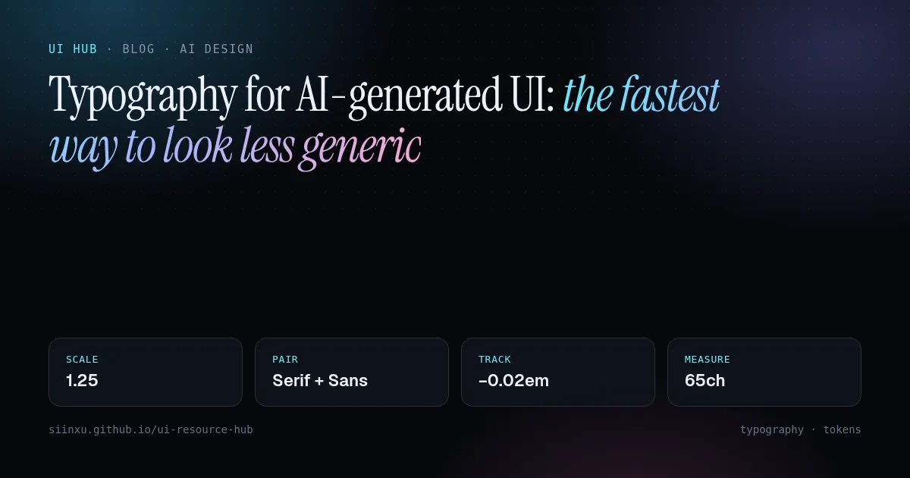
Typography for AI-generated UI: the fastest way to look less genericAI生成UIのタイポグラフィ：没個性から抜け出す最短路AI 생성 UI의 타이포그래피: 평범함을 벗는 가장 빠른 길Tipografi untuk UI jana AITypography cho UI do AI tạo: cách nhanh nhất để bớt tầm thườngLa typographie des UI générées par IATipografía para UI generada por IATypografie für KI-generierte UIs
Generators default to one sans at three sizes. A type scale, a second typeface, tighter tracking on display sizes and real line lengths fix most of it.生成器は1書体3サイズが既定。スケール、第2書体、見出しの字詰め、行長で大半が直る。생성기는 산세리프 하나에 크기 셋. 스케일, 두 번째 서체, 자간, 줄 길이로 대부분 해결.Skala jenis, muka taip kedua, jarak huruf dan panjang baris menyelesaikan kebanyakannya.Thang cỡ chữ, font thứ hai, giãn chữ và độ dài dòng giải quyết phần lớn.Une échelle, une seconde police, l'approche et la longueur de ligne règlent l'essentiel.Una escala, una segunda fuente, el tracking y la longitud de línea resuelven casi todo.Skala, zweite Schrift, Laufweite und Zeilenlänge lösen das meiste.
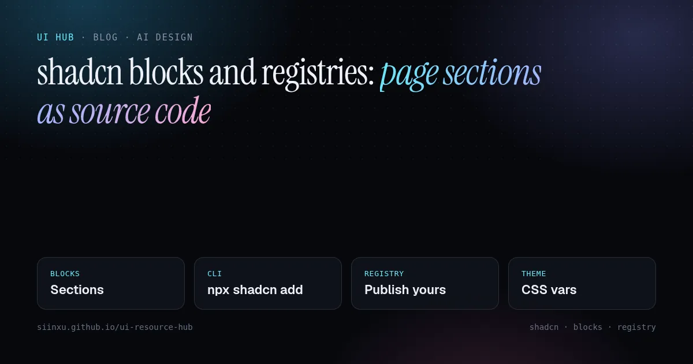
shadcn blocks and registries: page sections as source codeshadcnブロックとレジストリ：ページ部品をソースとしてshadcn 블록과 레지스트리: 페이지 섹션을 소스 코드로Blok dan registry shadcn: bahagian halaman sebagai kod sumbershadcn blocks và registry: khối trang dưới dạng mã nguồnBlocs et registres shadcn : des sections de page en code sourceBloques y registros de shadcn: secciones como código fuenteshadcn-Blocks und Registries: Seitenabschnitte als Quellcode
Blocks (dashboards, sidebars, login pages) install with one CLI command, and any team can publish its own registry. Why this is the best substrate for AI agents.ブロックはCLI一発で導入、どのチームも独自レジストリを公開可能。AIエージェントに最適な土台の理由。블록은 CLI 한 줄로 설치, 누구나 레지스트리 공개 가능. AI 에이전트에 최적인 이유.Blok dipasang dengan satu arahan CLI; mana-mana pasukan boleh terbitkan registry.Block cài bằng một lệnh CLI; nhóm nào cũng có thể phát hành registry riêng.Les blocs s'installent en une commande ; chaque équipe peut publier son registre.Los bloques se instalan con un comando; cualquier equipo puede publicar su registro.Blocks per CLI-Befehl; jedes Team kann eine eigene Registry veröffentlichen.
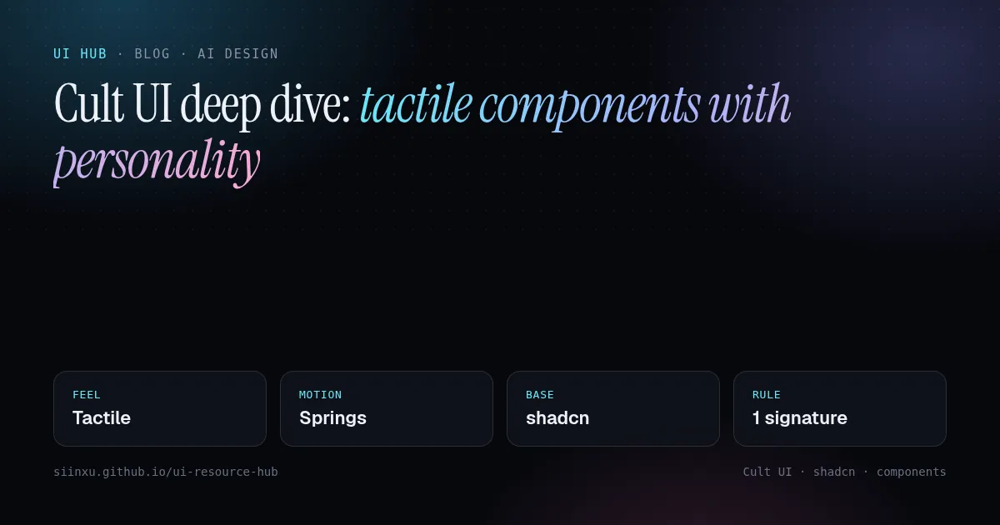
Cult UI deep dive: tactile components with personalityCult UI徹底解説：触感と個性のある部品Cult UI 심층 분석: 촉감과 개성이 있는 컴포넌트Cult UI mendalam: komponen taktil berperibadiCult UI chuyên sâu: component có cảm giác và cá tínhCult UI en profondeur : des composants tactiles avec du caractèreCult UI a fondo: componentes táctiles con personalidadCult UI im Detail: taktile Komponenten mit Charakter
shadcn-compatible components that feel physical: dynamic islands, textured buttons, expandable cards. How to borrow personality without breaking consistency.shadcn互換で物理的な触感の部品。一貫性を壊さずに個性を借りる方法。shadcn 호환, 물리적 촉감의 컴포넌트. 일관성을 해치지 않고 개성을 빌리는 법.Komponen serasi shadcn yang terasa fizikal.Component tương thích shadcn có cảm giác vật lý.Composants compatibles shadcn au toucher physique.Componentes compatibles con shadcn con tacto físico.shadcn-kompatible Komponenten mit physischem Gefühl.
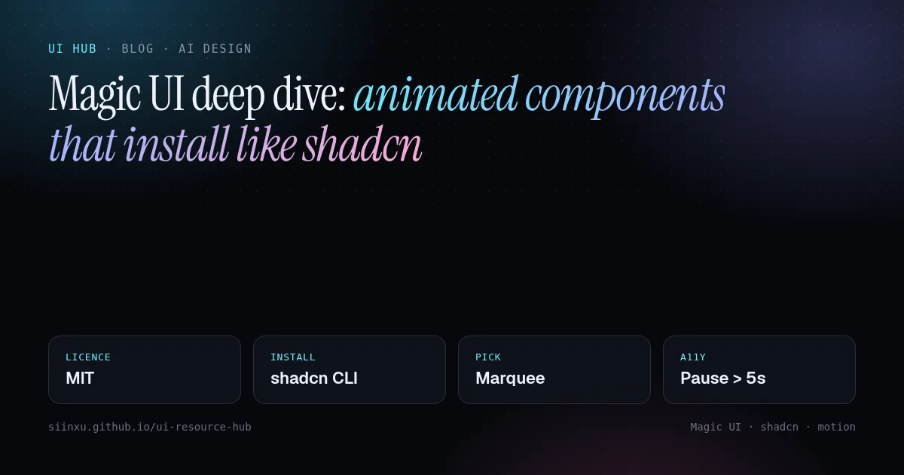
Magic UI deep dive: animated components that install like shadcnMagic UI徹底解説：shadcnのように入るアニメ部品Magic UI 심층 분석: shadcn처럼 설치되는 애니메이션 컴포넌트Magic UI mendalam: komponen animasi dipasang seperti shadcnMagic UI chuyên sâu: component động cài như shadcnMagic UI en profondeur : des composants animés qui s'installent comme shadcnMagic UI a fondo: componentes animados que se instalan como shadcnMagic UI im Detail: animierte Komponenten, installiert wie shadcn
An open-source (MIT) set of motion components distributed through the shadcn registry. Best picks for SaaS pages and how to keep them accessible.shadcnレジストリで配布されるMITのモーション部品。SaaSページ向けの選び方とアクセシビリティ。shadcn 레지스트리로 배포되는 MIT 모션 컴포넌트. SaaS 페이지 추천과 접근성 유지법.Komponen gerakan sumber terbuka (MIT) melalui registry shadcn.Bộ component chuyển động MIT phân phối qua shadcn registry.Composants animés open source (MIT) distribués via le registre shadcn.Componentes animados open source (MIT) distribuidos por el registro de shadcn.Open-Source-Motion-Komponenten (MIT) über die shadcn-Registry.
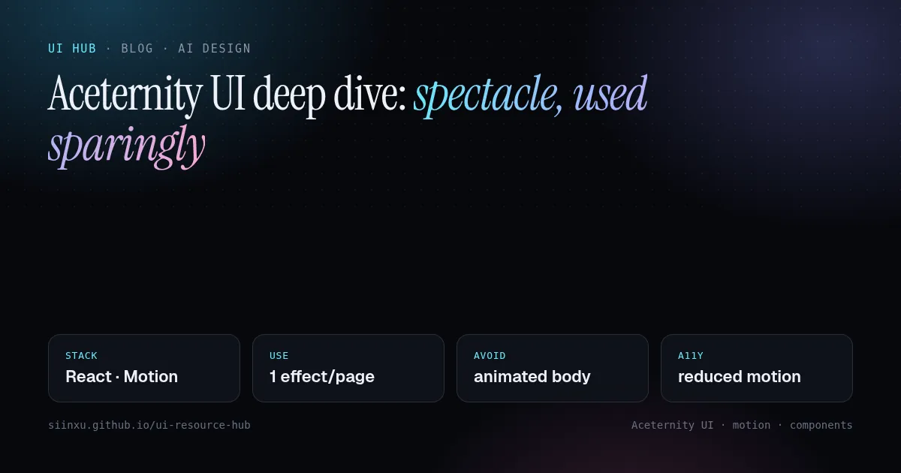
Aceternity UI deep dive: spectacle, used sparinglyAceternity UI徹底解説：派手さは控えめにAceternity UI 심층 분석: 화려함은 아껴서Aceternity UI mendalam: kemewahan, guna dengan jimatAceternity UI chuyên sâu: hiệu ứng ấn tượng, dùng tiết kiệmAceternity UI en profondeur : du spectacle, avec parcimonieAceternity UI a fondo: espectáculo, con moderaciónAceternity UI im Detail: Spektakel, sparsam eingesetzt
Copy-paste React + Tailwind + Motion effects that made the "fancy" landing look popular. Which pieces carry a page and which turn it into a demo reel.React+Tailwind+Motionのコピペ演出。ページを支える部品と、デモリールにしてしまう部品。복사-붙여넣기 React+Tailwind+Motion 효과. 페이지를 받쳐 주는 것과 데모 릴로 만드는 것.Kesan React+Tailwind+Motion salin-tampal. Mana yang menyokong halaman, mana yang jadi demo.Hiệu ứng React+Tailwind+Motion copy-paste. Phần nào nâng trang, phần nào biến trang thành demo.Effets React+Tailwind+Motion à copier-coller : ce qui porte une page, ce qui en fait une démo.Efectos React+Tailwind+Motion para copiar: lo que sostiene una página y lo que la vuelve demo.Copy-paste-Effekte mit React+Tailwind+Motion: was eine Seite trägt, was sie zur Demo macht.
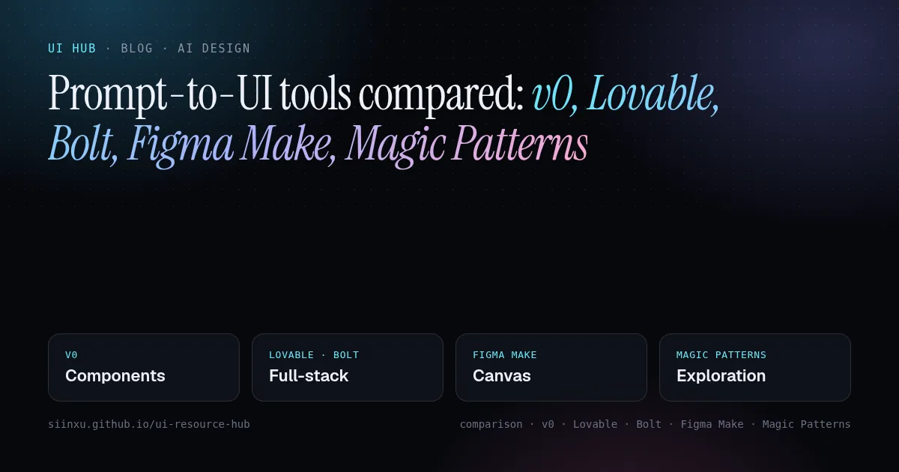
Prompt-to-UI tools compared: v0, Lovable, Bolt, Figma Make, Magic PatternsプロンプトUIツール比較：v0・Lovable・Bolt・Figma Make・Magic Patterns프롬프트-UI 도구 비교: v0, Lovable, Bolt, Figma Make, Magic PatternsPerbandingan alat prompt-ke-UISo sánh công cụ prompt-to-UI: v0, Lovable, Bolt, Figma Make, Magic PatternsComparatif des outils prompt-to-UIComparativa de herramientas prompt-to-UIPrompt-to-UI-Tools im Vergleich
Not a leaderboard: a decision guide by what you are shipping, where the output lives, and how much design control you need.ランキングではなく判断ガイド：何を出すか、成果物の置き場所、必要なデザイン制御で選ぶ。순위표가 아닌 결정 가이드: 무엇을 출시하는지, 산출물 위치, 필요한 디자인 통제로 고르자.Bukan senarai kedudukan: panduan memilih mengikut apa yang dihantar dan kawalan reka bentuk.Không phải bảng xếp hạng: hướng dẫn chọn theo thứ bạn giao, nơi đặt sản phẩm và mức kiểm soát thiết kế.Pas un classement : un guide de choix selon le livrable, l'emplacement du code et le contrôle du design.No es un ranking: una guía según lo que entregas, dónde vive el resultado y el control de diseño.Kein Ranking: eine Entscheidungshilfe nach Ergebnis, Ablageort und Designkontrolle.
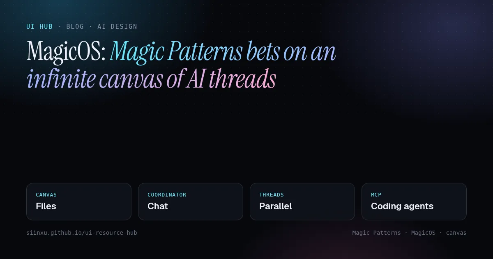
MagicOS: Magic Patterns bets on an infinite canvas of AI threadsMagicOS：Magic Patternsは無限キャンバス＋並列AIスレッドに賭けるMagicOS: Magic Patterns, 무한 캔버스와 병렬 AI 스레드에 베팅MagicOS: Magic Patterns bertaruh pada kanvas tanpa hadMagicOS: Magic Patterns đặt cược vào canvas vô hạn và luồng AI song songMagicOS : Magic Patterns parie sur un canevas infini de fils IAMagicOS: Magic Patterns apuesta por un lienzo infinito de hilos de IAMagicOS: Magic Patterns setzt auf eine unendliche Canvas mit KI-Threads
Launched 13 Oct 2026: one coordinator chat spawns parallel design threads on a shared canvas. What it fixes (lost context) and when a single design is still better.2026/10/13公開：1つのコーディネーターが共有キャンバス上で並列スレッドを起動。解決すること、単一デザインが良い場面。2026-10-13 출시: 하나의 코디네이터 채팅이 공유 캔버스에서 병렬 스레드를 만든다. 무엇을 해결하고 언제 단일 디자인이 나은가.Dilancar 13 Okt 2026: satu sembang penyelaras menjana bebenang reka bentuk selari pada kanvas.Ra mắt 13/10/2026: một chat điều phối tạo nhiều luồng thiết kế song song trên canvas chung.Lancé le 13/10/2026 : un chat coordinateur lance des fils de design parallèles sur un canevas partagé.Lanzado el 13/10/2026: un chat coordinador lanza hilos de diseño paralelos en un lienzo compartido.Start am 13.10.2026: ein Koordinator-Chat startet parallele Design-Threads auf einer Canvas.
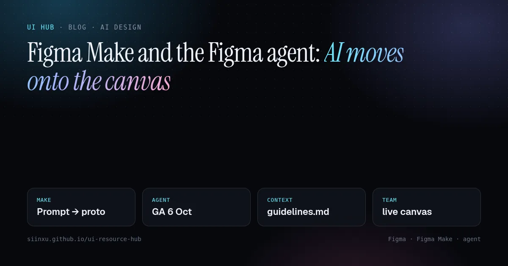
Figma Make and the Figma agent: AI moves onto the canvasFigma MakeとFigmaエージェント：AIがキャンバスへFigma Make와 Figma 에이전트: AI가 캔버스로Figma Make dan ejen Figma: AI pindah ke kanvasFigma Make và agent của Figma: AI lên canvasFigma Make et l'agent Figma : l'IA arrive sur le canevasFigma Make y el agente de Figma: la IA llega al lienzoFigma Make und der Figma-Agent: KI zieht auf die Canvas
Figma Make turns prompts into working prototypes; the Figma agent, generally available since 6 Oct 2026, reads team guideline files. Why the guideline file matters most.Figma Makeはプロンプトを動くプロトタイプに。2026/10/6 GAのエージェントはガイドラインを読む。肝はガイドライン。Figma Make는 프롬프트를 프로토타입으로, 2026-10-06 정식 출시된 에이전트는 가이드라인 파일을 읽는다.Figma Make jadikan prompt prototaip; ejen Figma (GA 6 Okt 2026) membaca fail garis panduan pasukan.Figma Make biến prompt thành prototype; agent Figma (GA 6/10/2026) đọc file hướng dẫn của nhóm.Figma Make transforme des prompts en prototypes ; l'agent (GA le 6/10/2026) lit les guides d'équipe.Figma Make convierte prompts en prototipos; el agente (GA 6/10/2026) lee las guías del equipo.Figma Make macht Prompts zu Prototypen; der Agent (GA 6.10.2026) liest Team-Guidelines.
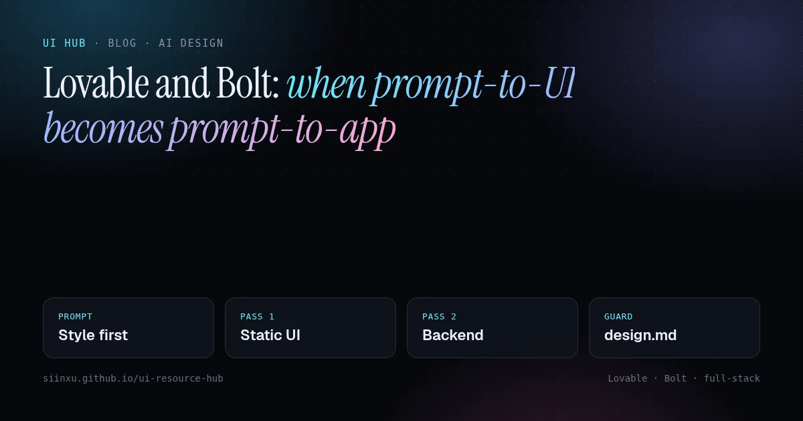
Lovable and Bolt: when prompt-to-UI becomes prompt-to-appLovableとBolt：プロンプトからUIがアプリになるときLovable과 Bolt: 프롬프트-UI가 프롬프트-앱이 될 때Lovable dan Bolt: apabila prompt-ke-UI menjadi prompt-ke-aplLovable và Bolt: khi prompt-to-UI thành prompt-to-appLovable et Bolt : quand le prompt-to-UI devient prompt-to-appLovable y Bolt: cuando prompt-to-UI se vuelve prompt-to-appLovable und Bolt: wenn Prompt-to-UI zu Prompt-to-App wird
Both tools build whole apps, so design quality now competes with data, auth and deploys for attention. How to keep the look from being an afterthought.どちらもアプリ全体を作るため、デザイン品質はデータや認証と注意を奪い合う。見た目を後回しにしない方法。둘 다 앱 전체를 만들기에 디자인 품질이 데이터·인증·배포와 경쟁한다. 외관을 뒷전으로 두지 않는 법.Kedua-duanya membina apl penuh; reka bentuk bersaing dengan data dan auth. Cara elak visual jadi hal kemudian.Cả hai dựng app hoàn chỉnh nên thiết kế phải tranh chú ý với dữ liệu, đăng nhập. Cách để giao diện không bị bỏ quên.Les deux construisent des apps entières : le design rivalise avec données et auth. Comment ne pas le reléguer.Ambos construyen apps completas: el diseño compite con datos y auth. Cómo evitar que quede para después.Beide bauen ganze Apps – Design konkurriert mit Daten und Auth. So bleibt die Optik keine Nebensache.
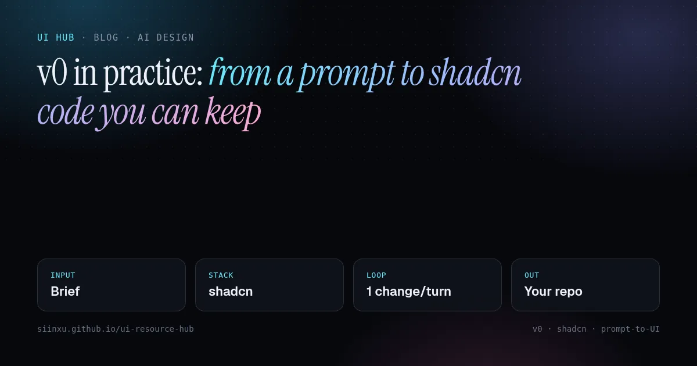
v0 in practice: from a prompt to shadcn code you can keepv0実践：プロンプトから残せるshadcnコードへv0 실전: 프롬프트에서 남길 수 있는 shadcn 코드까지v0 secara praktikal: dari prompt ke kod shadcn yang boleh disimpanv0 thực chiến: từ một prompt đến mã shadcn giữ lại đượcv0 en pratique : d'un prompt à du code shadcn qu'on gardev0 en la práctica: de un prompt a código shadcn que puedes conservarv0 in der Praxis: vom Prompt zu shadcn-Code, den man behält
v0 is strongest when you treat it as a shadcn/Tailwind code generator, not a design oracle. Brief it like an engineer, then pull the code into your repo.v0はデザインの神託ではなくshadcn/Tailwindのコード生成器として使うと最強。エンジニア向けに指示し、コードを自分のリポジトリへ。v0는 디자인 신탁이 아니라 shadcn/Tailwind 코드 생성기로 쓸 때 가장 강하다. 엔지니어에게 하듯 지시하고 코드를 저장소로 가져오자.v0 paling kuat sebagai penjana kod shadcn/Tailwind. Beri arahan seperti kepada jurutera, kemudian bawa kod ke repo anda.v0 mạnh nhất khi coi là trình sinh mã shadcn/Tailwind. Viết yêu cầu như cho kỹ sư rồi kéo mã về repo.v0 brille comme générateur de code shadcn/Tailwind. Briefez-le comme un ingénieur puis rapatriez le code.v0 rinde mejor como generador de código shadcn/Tailwind. Instrúyelo como a un ingeniero y lleva el código a tu repo.v0 glänzt als shadcn/Tailwind-Codegenerator. Briefen Sie es wie einen Engineer und holen Sie den Code ins Repo.
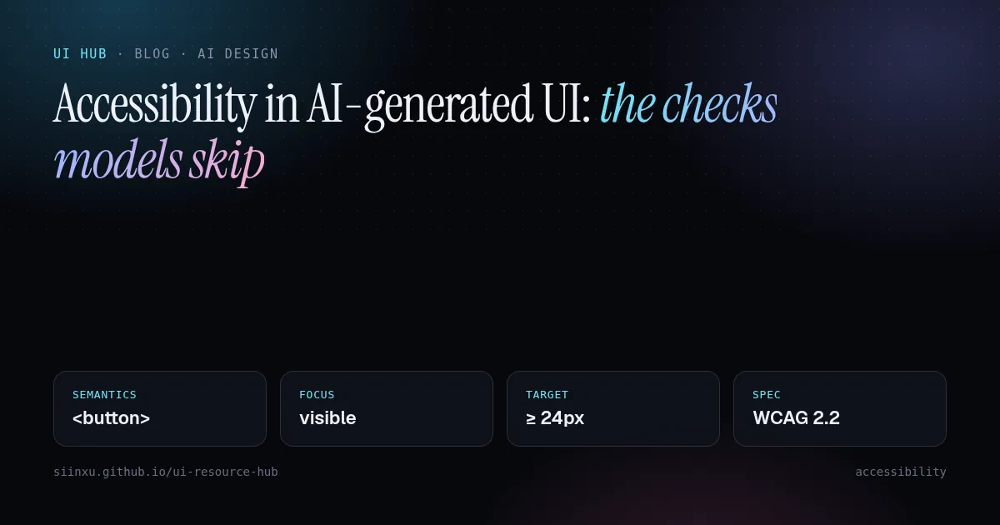
Accessibility in AI-generated UI: the checks models skipAI生成UIのアクセシビリティ：モデルが飛ばすチェックAI 생성 UI의 접근성: 모델이 빠뜨리는 점검Kebolehcapaian dalam UI jana AI: semakan yang dilangkau modelKhả năng tiếp cận trong UI do AI tạo: những kiểm tra mô hình bỏ quaAccessibilité de l'UI générée par IA : les vérifications oubliéesAccesibilidad en UI generada por IA: las comprobaciones que se saltanBarrierefreiheit in KI-generierter UI: die übersprungenen Checks
Generated UIs look fine and fail keyboards and screen readers. Start from accessible primitives, then audit against WCAG 2.2.見た目は良くてもキーボードやスクリーンリーダーで失敗。アクセシブルな基盤からWCAG 2.2で監査。보기엔 괜찮아도 키보드·스크린리더에서 실패. 접근성 기반에서 시작해 WCAG 2.2로 점검.Nampak baik tetapi gagal untuk papan kekunci dan pembaca skrin. Mula dengan primitif boleh capai, audit dengan WCAG 2.2.Trông ổn nhưng hỏng với bàn phím và trình đọc màn hình. Dùng primitive dễ tiếp cận, kiểm theo WCAG 2.2.Belles mais inutilisables au clavier. Partir de primitives accessibles, auditer selon WCAG 2.2.Se ven bien pero fallan con teclado y lector. Parte de primitivas accesibles y audita con WCAG 2.2.Sieht gut aus, scheitert an Tastatur und Screenreader. Mit barrierefreien Primitives starten, nach WCAG 2.2 prüfen.
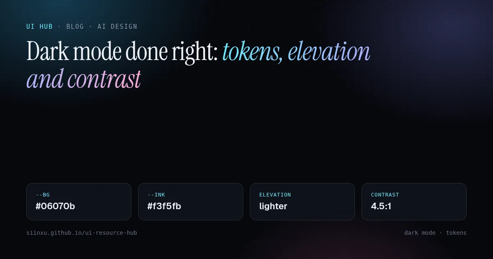
Dark mode done right: tokens, elevation and contrast正しいダークモード：トークン・階層・コントラスト다크 모드 제대로: 토큰, 고도, 대비Mod gelap yang betul: token, ketinggian dan kontrasLàm dark mode đúng: token, độ nổi và độ tương phảnUn mode sombre réussi : tokens, élévation et contrasteModo oscuro bien hecho: tokens, elevación y contrasteDark Mode richtig: Tokens, Elevation und Kontrast
Dark mode is a second palette, not an inverted one. Use semantic tokens, lighter surfaces for elevation, and desaturated accents.ダークモードは反転ではなく第二のパレット。意味トークン、明るい面で階層、彩度を下げたアクセント。다크 모드는 반전이 아니라 두 번째 팔레트. 시맨틱 토큰, 밝은 면으로 고도 표현.Mod gelap ialah palet kedua, bukan terbalik. Guna token semantik dan permukaan lebih cerah untuk ketinggian.Dark mode là bảng màu thứ hai, không phải đảo màu. Dùng token ngữ nghĩa, bề mặt sáng hơn để thể hiện độ nổi.Une seconde palette, pas une inversion. Tokens sémantiques, surfaces plus claires pour l'élévation.Una segunda paleta, no una inversión. Tokens semánticos y superficies más claras para la elevación.Eine zweite Palette, keine Invertierung. Semantische Tokens, hellere Flächen für Elevation.
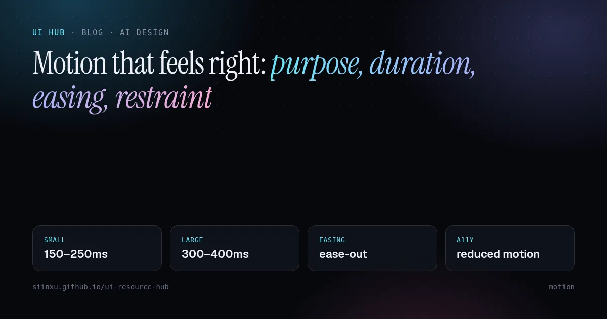
Motion that feels right: purpose, duration, easing, restraintしっくりくるモーション：目的・時間・イージング・抑制자연스러운 모션: 목적, 시간, 이징, 절제Gerakan yang terasa betul: tujuan, tempoh, easing, kawalanChuyển động đúng cảm giác: mục đích, thời lượng, easing, tiết chếUn mouvement juste : intention, durée, easing, retenueMovimiento que se siente bien: propósito, duración, easing, contenciónBewegung, die sich richtig anfühlt: Zweck, Dauer, Easing, Zurückhaltung
Most UI motion should be under 300ms, ease-out, and skipped for frequent actions. Spectacle belongs on marketing pages, not in tools.UIモーションは300ms以内・ease-out、頻繁な操作には付けない。UI 모션은 300ms 이하, ease-out, 잦은 동작엔 생략.Kebanyakan gerakan UI di bawah 300ms, ease-out, dan dilangkau untuk tindakan kerap.Hầu hết chuyển động dưới 300ms, ease-out, bỏ qua với thao tác thường xuyên.Moins de 300 ms, ease-out, et rien pour les actions fréquentes.Menos de 300 ms, ease-out, y nada en acciones frecuentes.Unter 300 ms, ease-out, und keine Animation für häufige Aktionen.
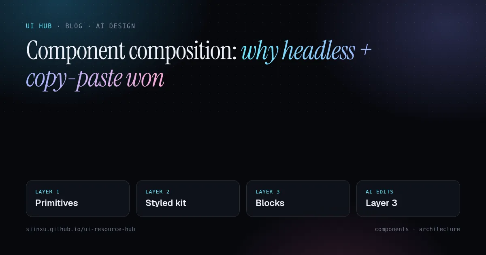
Component composition: why headless + copy-paste wonコンポーネント合成：ヘッドレス＋コピペが勝った理由컴포넌트 합성: 헤드리스 + 복붙이 이긴 이유Komposisi komponen: mengapa headless + salin-tampal menangKết hợp component: vì sao headless + copy-paste thắngComposition de composants : pourquoi headless + copier-coller a gagnéComposición de componentes: por qué headless + copiar y pegar ganóKomponenten-Komposition: warum Headless + Copy-Paste gewonnen hat
Radix behaviour, your styles, code you own. Compound components keep APIs small and make AI edits safer.振る舞いはRadix、スタイルは自分、コードは自分のもの。複合コンポーネントでAPIは小さく、AI編集も安全に。동작은 Radix, 스타일과 코드는 내 것. 복합 컴포넌트는 API를 작게, AI 수정을 안전하게.Tingkah laku Radix, gaya anda, kod milik anda. Komponen majmuk menjadikan suntingan AI lebih selamat.Hành vi của Radix, style của bạn, code của bạn. Component ghép giúp AI sửa an toàn hơn.Comportement Radix, vos styles, votre code. Les composants composés rendent les éditions IA plus sûres.Comportamiento de Radix, tus estilos, tu código. Los compuestos hacen más seguras las ediciones de IA.Radix-Verhalten, eigene Styles, eigener Code. Compound Components machen KI-Änderungen sicherer.
Teaching agents taste: how design skills de-slop AI interfacesエージェントにセンスを教える：デザインスキルでAIっぽさを消す에이전트에게 취향 가르치기: 디자인 스킬로 AI 티 없애기Mengajar ejen cita rasa: kemahiran reka bentuk membuang rupa "AI"Dạy agent gu thẩm mỹ: skill thiết kế xoá "mùi AI"Apprendre le goût aux agents : les skills de design contre l'UI génériqueEnseñar criterio a los agentes: skills de diseño contra la UI genéricaAgenten Geschmack beibringen: Design-Skills gegen generische KI-UIs
Skills like frontend-design, taste-skill and impeccable package opinions as files agents load on demand. Here is how to combine them.frontend-design、taste-skill、impeccableなどは設計の意見をファイル化したもの。組み合わせ方を解説。frontend-design, taste-skill, impeccable 같은 스킬은 디자인 관점을 파일로 담는다. 조합법.Kemahiran seperti frontend-design, taste-skill dan impeccable membungkus pendapat reka bentuk. Cara menggabungkannya.Các skill như frontend-design, taste-skill, impeccable đóng gói quan điểm thiết kế. Cách kết hợp.frontend-design, taste-skill, impeccable : des opinions de design en fichiers. Comment les combiner.frontend-design, taste-skill, impeccable: opiniones de diseño en archivos. Cómo combinarlas.frontend-design, taste-skill, impeccable: Design-Meinungen als Dateien. So kombiniert man sie.
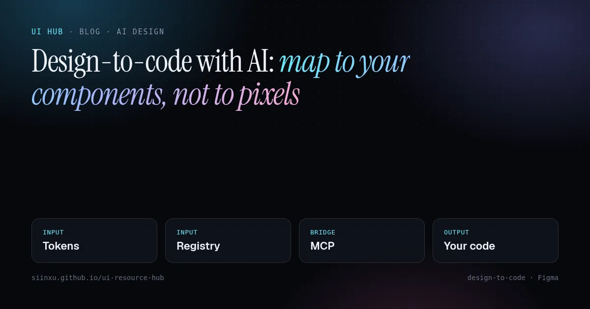
Design-to-code with AI: map to your components, not to pixelsAIでデザインからコードへ：ピクセルではなくコンポーネントに対応付けるAI로 디자인→코드: 픽셀이 아니라 컴포넌트에 매핑하라Reka bentuk ke kod dengan AI: petakan ke komponen, bukan pikselTừ thiết kế sang code bằng AI: ánh xạ vào component, không phải pixelDu design au code avec l'IA : mapper vers vos composants, pas des pixelsDe diseño a código con IA: mapea a tus componentes, no a píxelesDesign-to-Code mit KI: auf Komponenten mappen, nicht auf Pixel
Pixel-perfect export creates throwaway code. Give the agent your component registry and tokens via MCP so output reuses what you already ship.ピクセル完全な書き出しは使い捨てコードになる。MCPでレジストリとトークンを渡そう。픽셀 퍼펙트 내보내기는 일회용 코드다. MCP로 레지스트리와 토큰을 넘겨라.Eksport piksel sempurna menghasilkan kod pakai buang. Beri registri komponen dan token melalui MCP.Xuất pixel-perfect tạo code dùng một lần. Đưa registry và token qua MCP.L'export au pixel produit du code jetable. Donnez registre et tokens via MCP.Exportar al píxel crea código desechable. Pasa registro y tokens vía MCP.Pixelgenauer Export erzeugt Wegwerfcode. Registry und Tokens per MCP übergeben.
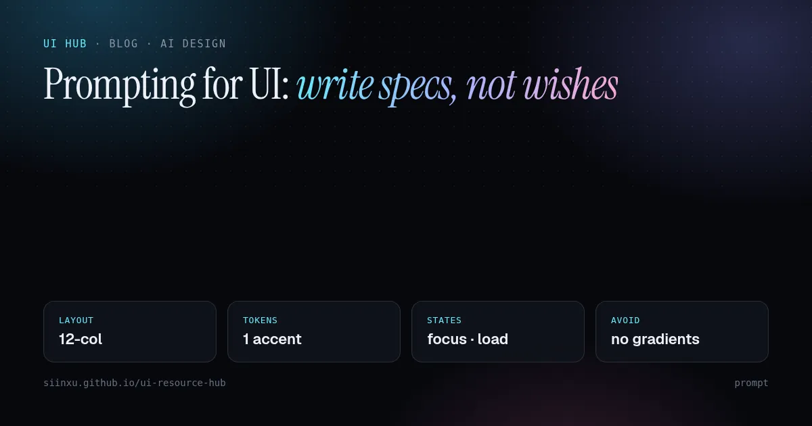
Prompting for UI: write specs, not wishesUIのためのプロンプト：願望ではなく仕様を書くUI 프롬프트: 소원 말고 명세를 써라Prompt untuk UI: tulis spesifikasi, bukan hasratViết prompt cho UI: viết đặc tả, đừng viết mong muốnPrompts pour l'UI : écrire des specs, pas des souhaitsPrompts para UI: escribe especificaciones, no deseosPrompts für UI: Spezifikationen statt Wünsche
"Modern and clean" means nothing to a model. Name layout, tokens, states, content and what to avoid.「モダンでクリーン」はモデルに何も伝えない。レイアウト、トークン、状態、内容、禁止事項を書く。"모던하고 깔끔하게"는 의미가 없다. 레이아웃, 토큰, 상태, 콘텐츠, 금지 사항을 적어라."Moden dan bersih" tiada makna. Nyatakan susun atur, token, keadaan, kandungan dan larangan."Hiện đại, gọn gàng" chẳng nói gì. Hãy nêu bố cục, token, trạng thái, nội dung và điều cấm.« Moderne et épuré » ne dit rien. Précisez mise en page, tokens, états, contenu et interdits."Moderno y limpio" no dice nada. Indica layout, tokens, estados, contenido y prohibiciones.„Modern und clean“ sagt nichts. Nenne Layout, Tokens, Zustände, Inhalt und Verbote.
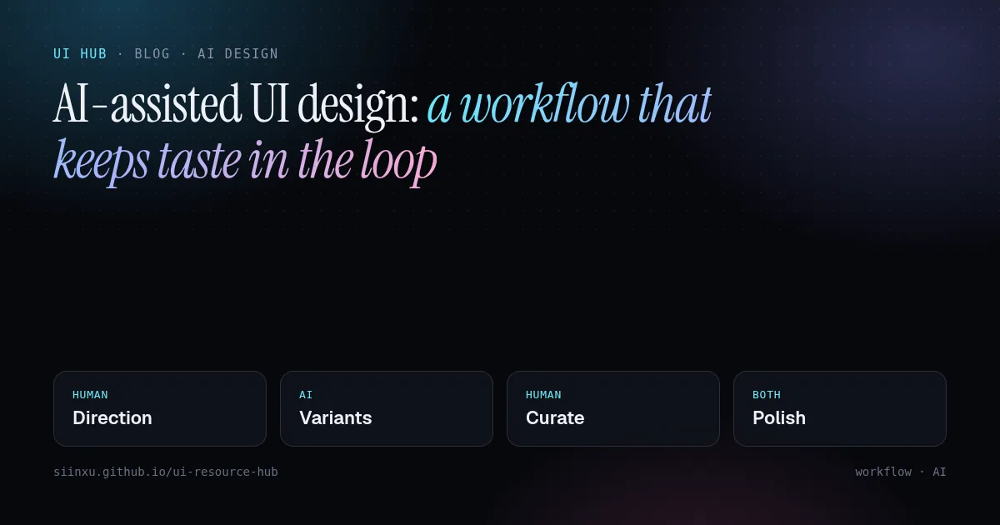
AI-assisted UI design: a workflow that keeps taste in the loopAI支援UIデザイン：センスを手放さないワークフローAI 보조 UI 디자인: 취향을 잃지 않는 워크플로Reka bentuk UI berbantu AI: aliran kerja yang mengekalkan cita rasaThiết kế UI có AI hỗ trợ: quy trình giữ được gu thẩm mỹDesign d'UI assisté par l'IA : un flux qui garde le goût dans la boucleDiseño de UI asistido por IA: un flujo que mantiene el criterioKI-gestütztes UI-Design: ein Workflow, der Geschmack im Spiel hält
Generators are fast but average. Split the job: humans set direction and constraints, AI explores variants, humans curate and polish.生成ツールは速いが平均的。方向と制約は人、バリエーションはAI、選別と仕上げは人。생성기는 빠르지만 평범하다. 방향과 제약은 사람, 변형은 AI, 선별과 다듬기는 사람.Penjana pantas tetapi biasa. Manusia tetapkan hala, AI teroka variasi, manusia pilih dan gilap.Công cụ sinh nhanh nhưng tầm thường. Người định hướng, AI khám phá biến thể, người chọn lọc và hoàn thiện.Rapides mais moyens : l'humain fixe la direction, l'IA explore, l'humain sélectionne et peaufine.Rápidos pero promedio: el humano fija la dirección, la IA explora, el humano elige y pule.Schnell, aber durchschnittlich: Mensch gibt Richtung vor, KI exploriert, Mensch kuratiert und poliert.
No matching posts該当する記事はありません일치하는 글이 없습니다Tiada artikel sepadanKhông có bài phù hợpAucun article correspondantNo hay artículosKeine passenden Beiträge